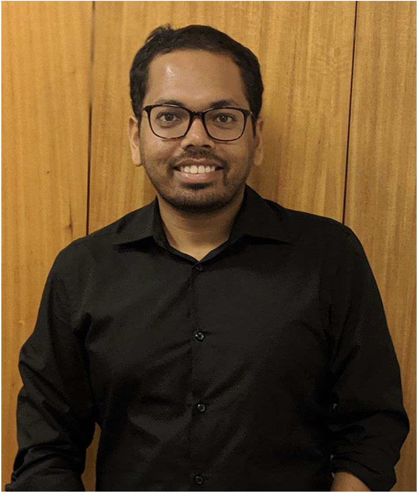

Assistant Professor of Mathematics
Millsaps College · Jackson, MS
I am an Assistant Professor in the Department of Mathematics at Millsaps College. Prior to this, I held teaching and research positions at Kenyon College, the University of South Florida, and Virginia Tech. I completed my Ph.D. in Mathematics at the University of Memphis in 2021 under the guidance of Dr. Fernanda Botelho. I received my Master's degree in Mathematics from the Indian Institute of Science Education and Research, Kolkata and my Bachelor's degree in Mathematics from the University of Calcutta. My research interests lie in operator theory and Banach space geometry, with a focus on the structural and spectral properties of operators and projections on Banach spaces. I am committed to active, inquiry-based teaching and enjoy working with undergraduates on research.
My research lies at the intersection of functional analysis, operator theory, and Banach space geometry. I am broadly interested in understanding how the algebraic and spectral properties of operators on Banach spaces interact with the geometric structure of the space. A particular focus of my work is the study of projections and isometries — how they arise from operators, what they reveal about the underlying space, and how they connect to the broader geometry of Banach spaces. I am also actively interested in problems related to the numerical index of Banach spaces, which sits at a rich interface between operator theory and Banach space geometry.
For a complete list of presentations, see CV.
I have taught a broad range of courses, from large introductory classes to advanced proof-based classes. I aim to create an active and inclusive classroom environment where students develop both mathematical intuition and the ability to think and communicate rigorously. I am also enthusiastic about undergraduate research and enjoy guiding students as they learn to ask good questions, work through uncertainty, and communicate mathematics with clarity and precision.
Full academic CV including publications, presentations, teaching, and service.